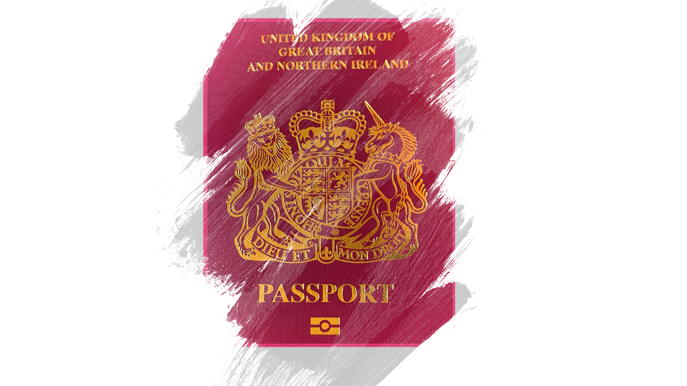

Under the British government new visa scheme, Hongkongers are now using the British National Overseas passport to resettle to the United Kindom
Following the introduction of the national security legislation in Hong Kong, the UK announced that from January 2021, all British National Overseas passport holders and their dependents will be given the right to work and study for five years in the UK, and they will be able to apply for citizenship after a further year.
After the enactment of the Hong Kong Act 1985, the British National Overseas passport was introduced in 1987. Those who hold BNO passports are permanent residents of Hong Kong who were British Dependent Territories citizens until 30 June 1997 and had registered as BNO.
The BNO passport is a travel document that does not carry citizenship rights, but holders are entitled to some consular assistance outside Hong Kong and China. It was created for people from Hong Kong so that they could retain British nationality and a connection to the UK after the handover to China in 1997 in line with the Sino-British Joint Declaration.
Previously, these passport holders had the right to remain in the UK for up to six months, but they were not allowed to reside or work there. They could not access public funds, such as government benefits.

Mr Wong holds a British National Overseas passport which means he is now eligible to stay in Britain for five years and apply for settlement if he meets the knowledge of English requirements and passes the “Life in the UK” Test.
He has been trying to learn about life in the UK by watching videos shared by a youtuber, Cocogor who recently moved to the UK from Hong Kong. Mr Wong says many of his friends are also planning to move there.

He believes that the UK shares a similar culture and political system to Hong Kong since the city was once colonised by the British. He is optimistic about his relocation and hopes to continue to pursue his photography career in the UK.
A study by the British Home Office in 2020 estimates that 5.4 million Hong Kongners are eligible for the British Nationality (Overseas) passport and that as many as 322,000 will move to the country between 2021 and 2025.
British National (Overseas) Passport Holders
The graph illustrates the percentage of people applying for British National Overseas passports over the past 5 years, the percentage started to plunge from 2019 to 2020.
Jonathan Williams, Head of political and communications from the British Consulate-General Hong Kong said it is uncertain how many BNO holders will move to the UK using the new visa route, given the impact of COVID-19. But the estimate is between 123,000 and 153,700 visa applications in the first year and between 258,000 and 322,400 over the following five years.
“We understand that moving from Hong Kong to the UK is a big decision, and some BNO holders and their families may not want to leave their home in Hong Kong. But after the imposition of the National Security Law in 2020, the sad reality is that basic rights and freedoms are no longer guaranteed and respected in Hong Kong. The BNO provides an option of moving to the UK where individuals’ rights and freedoms can be respected,” Mr Williams said.
Mr Williams added that the UK government is working with civil society groups and others to support the effective integration of BNO passport holders arriving in the UK. For example, the Ministry of Housing, Communities and Local government has announced the Hong Kong BNO Integration Programme which dedicates over £43 million (HKD 463 million) to help BNO families and individuals who choose to settle in the UK to access housing, work and educational support. Twelve virtual Welcome Hubs were set up across the UK under the programme to tackle hate crime. An additional £300,000 (HKD 3.23 million) will be available to address BNO related hate crime in 2021/22, should it arise.
But Beijing sees Britain's new citizenship pathway as a violation of the Sino-British Joint Declaration the handover agreement which stipulates that BNO passport holders do not enjoy UK residency. China has repeatedly warned Britain to stay out of its affairs in Hong Kong.
The Hong Kong government told 14 countries including Canada, Australia, Germany and Japan to stop accepting applications from Hongkongers under the holiday working visa scheme, in their countermeasure against London over their offer on the new visa scheme and added that those applicants should instead present their Hong Kong passports. The working holiday scheme allows Hong Kongers aged between 18 and 30 years who wish to seek cultural and educational exchange in countries signatory to the scheme.
A housewife with two children Ms Cheung, 38, who asked to be identified only by her surname and her husband are BNO passport holders. She is worried about her relocation plan as the Hong Kong government attempted to propose the amendments of immigration ordinance that would authorise immigration director to ban anyone from boarding a plane or a ship without obtaining a court order. So Ms Cheung is in a hurry to leave because she is worried she might lose her opportunity to do so.
“In the past few months, the BNO passport has been a very sensitive issue for the HKSAR and Chinese government. I think they will try all they can to make you stay. I don’t think they will let you go easily,” Ms Cheung said.
Ms Cheung’s husband is taking his two childere to visit Victoria Harbour (left) and kids playing with the fountain at the harbour (right). People in the photos asked not to disclose their identify. Photos: Ms Cheung.
The Hong Kong Bar Association criticised the proposed amendment bill, saying it could give “apparently unfettered power” to the immigration director.
In a statement released on February 13 from Security Bureau said “the proposed provision in the Immigration (Amendment) Bill 2020 (the Bill) to empower the Secretary for Security to make regulations in relation to the provision of passenger information by carriers is intended for fulfilling the international obligation of the Hong Kong Special Administrative Region under the "Convention on International Civil Aviation".”
According to Article 31 of the Basic Law and Article 8(2) of the Hong Kong Bill of Rights, “Hong Kong residents shall have freedom of movement within the Hong Kong Special Administrative Region and freedom of emigration to other countries and regions. They shall have freedom to travel and to enter or leave the Region. Unless restrained by law, holders of valid travel documents shall be free to leave the Region without special authorization.”
On January 29, the Hong Kong government announced that it no longer recognized the British National (Overseas) passports as a valid travel document or proof of identity after the British government set out details of the application process for new BNO visas.
The statement said “when passengers board flights for Hong Kong, airlines must require Hong Kong residents concerned to present their HKSAR passports or Hong Kong permanent identity cards as proof.”
Mr Williams said that the UK government is disappointed but not surprised by the Chinese decision not to recognise BNO passports. “Despite this, BNO status holders and their families can use documentation other than BNO passports to travel and enter the UK. There are no plans to stop issuing British passports to British Nationals Overseas. The UK Government – and countless countries around the world – continue to recognise valid BNO passports.”

According to the National People’s Congress Standing Committee’s explanation in 1996 about the application of Chinese Nationality Law in the SAR after the 1997 handover, Hongkongers with dual nationalities are regarded as Chinese nationals in Hong Kong.
Ms Cheung was aware that she would be regarded as a Chinese national by the authorities though she also holds a BNO passport. But she would not be threatened by the policy and pointed out that the BNO visa was issued digitally by Britain. She could simply use her Hong Kong identity cards or Special Administrative Region passports to fly out of the city.
Mr Wong thinks that it is meaningless to be a Hongkonger because his vote would not be counted toward a candidate he voted for and at the end the central government would appoint the chief executive of Hong Kong.
“ I totally lost my confidence in the Hong Kong judiciary and they won’t treat me fairly. I believe that British nationality will give me better protection because of my political background and the work I do.” Mr Wong said.
A survey by the University of Hong Kong in 2019 found that 84.6% of 692 respondents identify themself as “Hongkonger” while 55.2% of respondents would indicate their identity as "Chinese". Among younger respondents, aged 18-29, more than 90% also did not feel proud of becoming a national citizen of China and more than 71% gave negative appraisal toward the central government policy on Hong Kong.
Hong Kong People's Identity Rating
The percentage of Hongkongers rating their identity as “Hongkonger” reached the peak in 2019, while those identifying themselves as “Chinese” declined.
Professor from the Department of Public Policy at City University of Hong Kong, who asked to remain anonymous, said young people have a strong sense of identity as Hongkongers because they were born and raised in the city and it is natural that they would have a strong feeling of belonging to Hong Kong.
A policy paper by the Research Center for Sustainable Hong Kong in 2018 found that trust in the central government was a highly significant factor to explain national identity strength.
The paper concluded that “Chinese and Hong Kong identities should be understood and measured as two related, but clearly distinct attitudes. The identity strength of “Hongkonger” has essentially remained stable and unpolitical. It is the sense of belonging to China that has become weaker and increasingly partisan.”
Ms Cheung loves Chinese culture but would consider herself as a Chinese person from Hong Kong, it is because she doesn’t want to have any linkage with the Chinese Communist Party.
“I came from Hong Kong and I am a Hongkonger, that’s a choice I made. I am ethnically from the Han Chinese race. That's something that I can’t change. It’s not a problem for me to say that I am Chinese. It’s my roots, my heritage and it’s where I come from. I don’t deny it. But predominantly I am from Hong Kong because it is so different from mainland China, I think we have to assert that difference ”Ms Cheung said.
Mr Wong also said he would define his identity based on values and culture. He considers himself a Hongkonger because he participated in the social movement and was moved by the spirit.
“Our values and spirit are based on democratic values, and freedom of speech which I think is essential for advance civilisation, Mr Wong said.